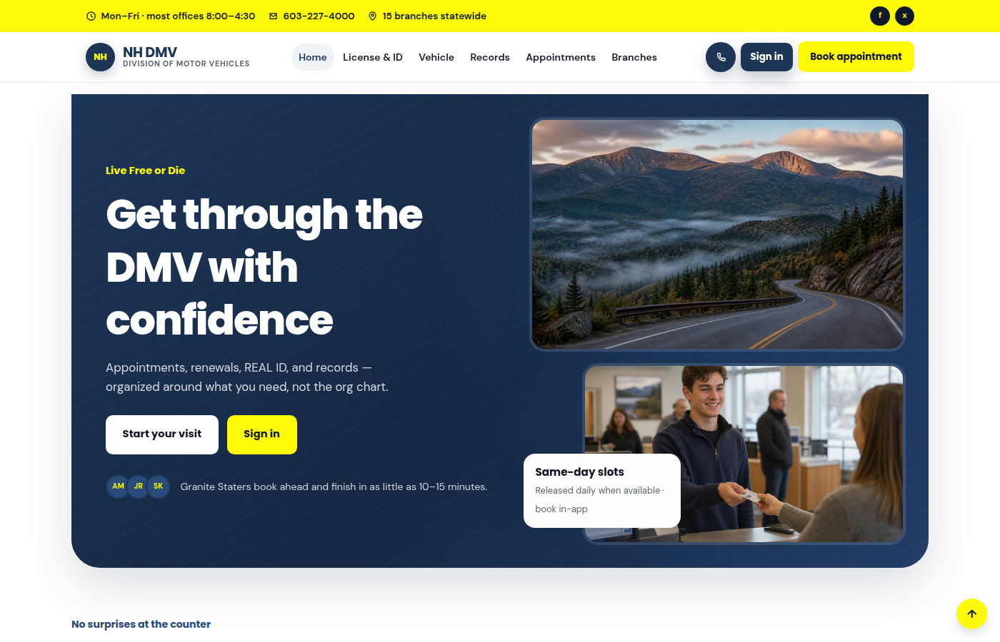
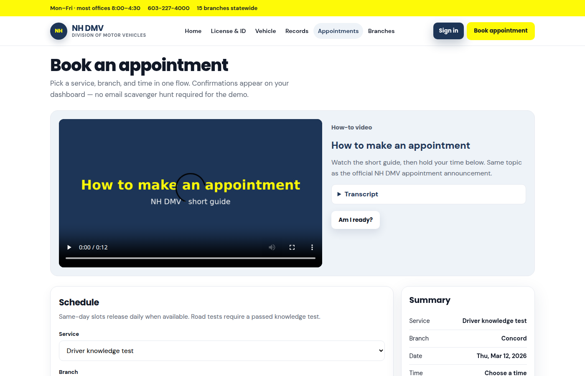
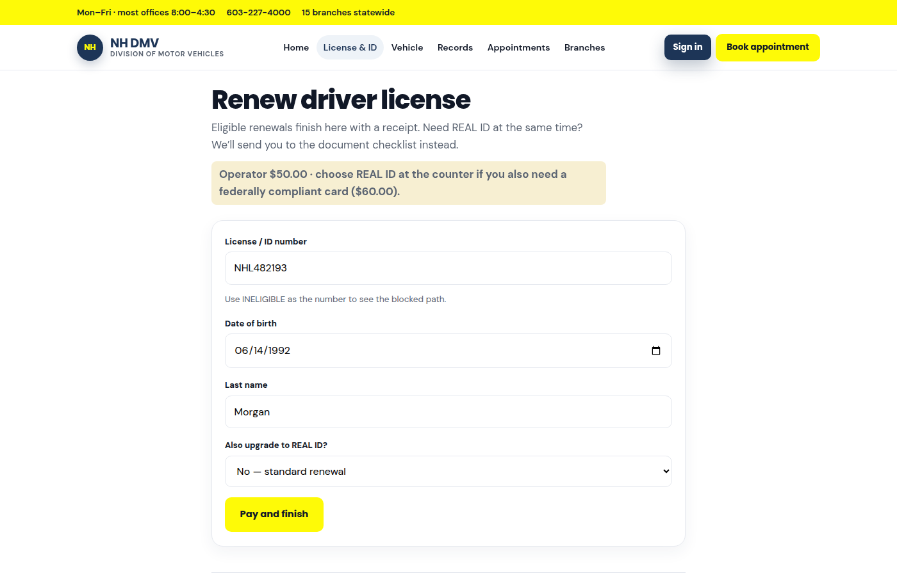
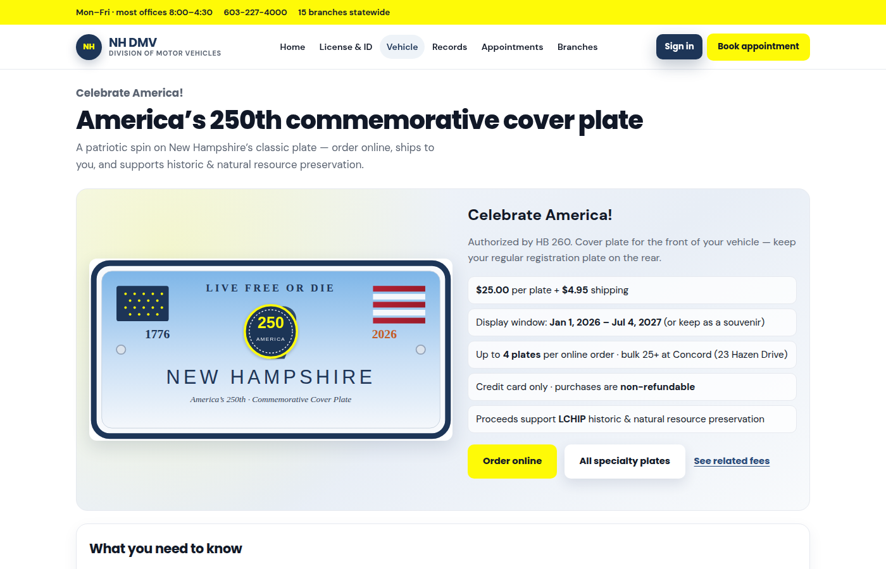
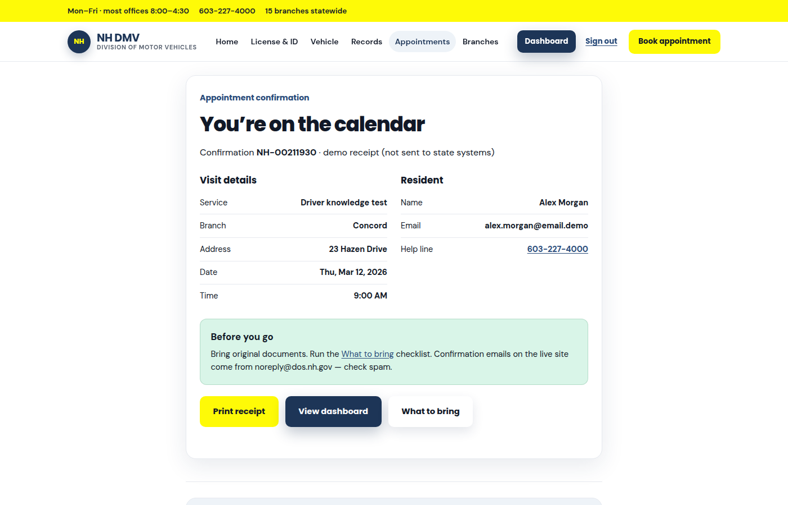

The problem
The live NH DMV site is a directory of programs, PDFs, and third-party forms. A resident with one job — “renew my license,” “book REAL ID,” “order the America 250 plate” — has to infer eligibility, documents, fees, and whether the next click is a dead end. The cost shows up at the counter: a wasted appointment, a missing birth certificate, a “you needed to start at town hall” conversation.
This concept does not replace production login, payments, or plate inventory. It redesigns the story around the visit: one calm portal, six hubs, and journeys that actually end.
The principle
Task first
Home is a stack of jobs, not an org chart. License, vehicle, records, and appointments share one chrome.
Tell the truth early
Online vs. appointment, fees, and documents sit on the same path. Ineligible renewals stop before a fake payment.
Finish with a receipt
Booking, renewal, registration, placard, vanity, and America 250 all land on a printable confirmation.
Five screens
Navy #1d3557 and yellow #fefa07 carry the system. Yellow is a signal, not a highlighter on every last word.





What we refused to add
- More hubs. Six primary destinations is the information architecture.
- Fake production login, card capture, or live plate inventory.
- A studio ribbon on every civic page — the concept is the product, not the byline.
The remaining craft is how the story reads on a phone and how it behaves with a keyboard: visible focus, honest form errors, and a skip link that actually lands in the main column.